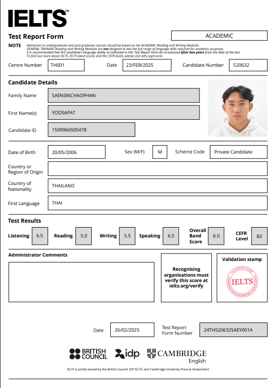
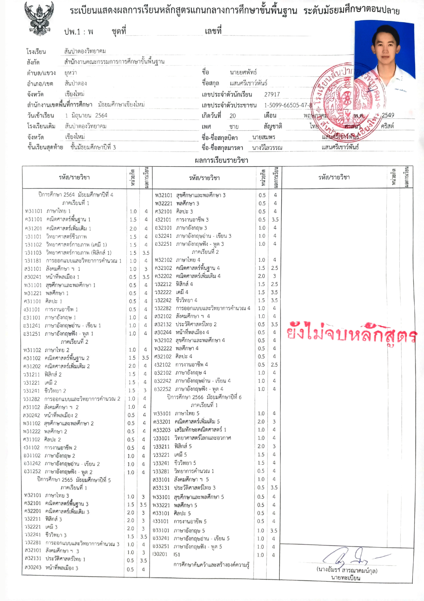
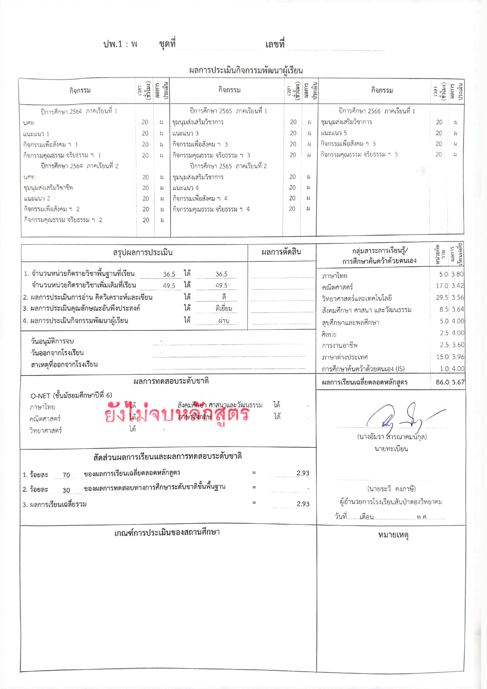

☰
หน้าแรก
ประวัติส่วนตัว
ผลงานและรางวัล
ติดต่อ
Introduction
ข้อมูลส่วนตัว
ชื่อ
: นายยศพัทธ์ แสนศรีเชาว์พันธ์
ชื่อเล่น
: เจง
อายุ
: 19 ปี
วุฒิการศึกษา
: มัธยมศึกษาปีที่ 6
ที่อยู่
: แม่วาง เชียงใหม่ 50360
สัญชาติ
: ไทย
เพศ
: ชาย
วันเกิด
: 20 พฤษภาคม 2549
ประวัติการศึกษา
ประถมศึกษา
: โรงเรียนสารสาสน์วิเทศอุปภัมป์
มัธยมศึกษา
: โรงเรียนสันป่าตองวิทยาคม
ประวัติการทำงาน
Wakeboarding Coach
- Canyon wake park (cable park)- Chiangmai Thailand
- January 2024 - still working
ในตำแหน่ง โค้ชสอนเล่นเวคบอร์ด เป็นงานที่อาศัยสกิลมากมายในการสอนไม่ว่าจะเป็นการสังเกตุ การหาปัญหาและแก้ปัญหา การแก้ปัญหาเฉพาะหน้า และการแก้ปัญหาให้ตรงจุด มากกว่านี้คือการใช้ภาษาที่ 2 นั้นคือภาษาอังกฤษเนื่องจากกีฬานี้เป็นกีฬาที่คนส่วนใหญ่ที่มาเล่นเป็นชาวต่างชาติ ทักษะการสื่อสารและทำความเข้าใจจึงเป็นเรื่องที่สำคัญมาก
Sales live
- Perpatual Rose Garden
ในตำแหน่งงานนี้เป็นคล้ายตัวแทนจำหน่ายไลฟ์ขายของให้กับธุรกิจของทางบ้านที่ทำฟาร์มกุหลาบสายพันธุ์ ซึ่งการไลฟ์ขายของเป็นงานที่ต้องใช้ทักษะในการโฆษณา การมั่นใจในการพูด ทักษะการขายเพื่อจะให้ทำยอดขายได้จำเป็นต้องพูดดึงดูดลูกค้าได้และมากกว่านี้ยัวจำเป็นจะต้องรู้รายละเอียดของสายพันธุ์ของกุหลาบนับ 1000+ กว่าสายพันธุ์เพื่อให้ลูกค้ามั่นใจในผลิตภัณฑ์เรา
Facebook Page Administrator/Own business
- 2021-2023
ในตอนอายุประมาณ 16 ได้ลองเปิดเพจเฟสบุ๊คของตัวเองเพื่อทำการขายกุหลาบช่วยทางบ้านจึงทำให้รู้ว่าการหารายได้ให้กับตัวเองค่อนข้างยากเพราะจะต้องมีทักษะในการบริหารจัดการและ รับแรงกดดันและแก้ไขปัญหา
ทักษะ
- ตัดต่อวิดีโอ และ ถ่ายภาพ
- ภาษาอังกฤษ
- เรียนรู้ไว
- เปิดรับพร้อมเรียนรู้
- ตรงเวลา
- ความมั่นใจ
ความสามารถ
- Capcut
- Lightroom
- Blender 3D
- Canva
- HTML, CSS
- Camera
ภาษา
- ภาษาไทย
: ภาษาแม่
- ภาษาอังกฤษ
: IELTS Academic 6.0 (B2)
- Reading 5.0
- Listening 6.5
- Writing 5.5
- Speaking 6.5

GPA เกรดเฉลี่ยสะสม
เกรดเฉลี่ยมัธยมศึกษาตอนปลาย
 